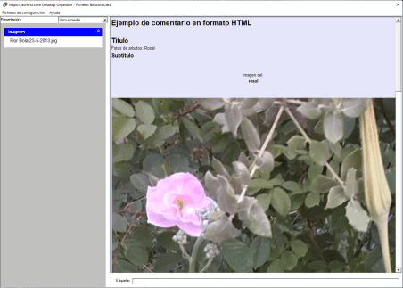
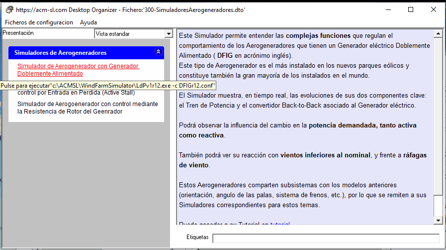

Existen ficheros que contienen información relevante, que conocemos después de realizar un esfuerzo de lectura y análisis que puede ser importante. En algunos casos, es conveniente anotar los conceptos o ideas obtenidas de ese esfuerzo de análisis, y asociar estas notas con el documento de referencia. El Organizador de Escritorio dispone del concepto de Comentario asociado a una Opción (fichero, dirección URL, ejecutable, etc.) pensado para:
- Anotar comentarios muy fácil y rápidamente sobre la Opción.
- La recuperación instantánea de comentarios, cuando el ratón pasa sobre la Opción en el panel izquierdo.
Esta rapidez de presentación de los comentarios facilita mucho la exploración de la información. Además, el texto de los comentarios se utiliza también en las búsquedas por texto libre.
Los comentarios admiten formato HTML, el utilizado para crear paginas web, lo que da una gran versatilidad en dos aspectos:
- Se puede cambiar el formato de cualquier parte del texto: en negrita, en itálica, subrayado, tamaños de caracteres, color.
- Se pueden incluir imágenes.
- Se pueden incluir hiperenlaces, tanto a URLs en Internet, como a ficheros en el disco.
La siguiente figura muestra un ejemplo de comentario con formato HTML:

Esta información se guarda en el fichero de configuración que se está usando, y por tanto, queda asociado al documento o aplicación a que se refiere la Opción.
En el caso de aplicaciones que requieren parámetros de los que dependen su funcionalidad, el Comentario asociado a la Opción correspondiente es imprescindible para poder conocer su comportamiento antes de lanzarla. Ver figura siguiente:
